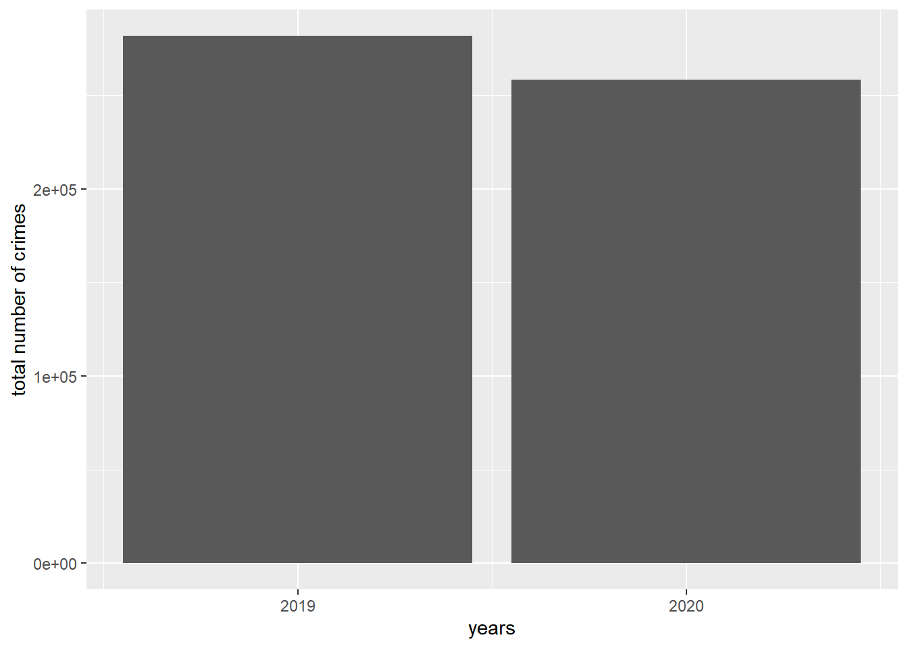
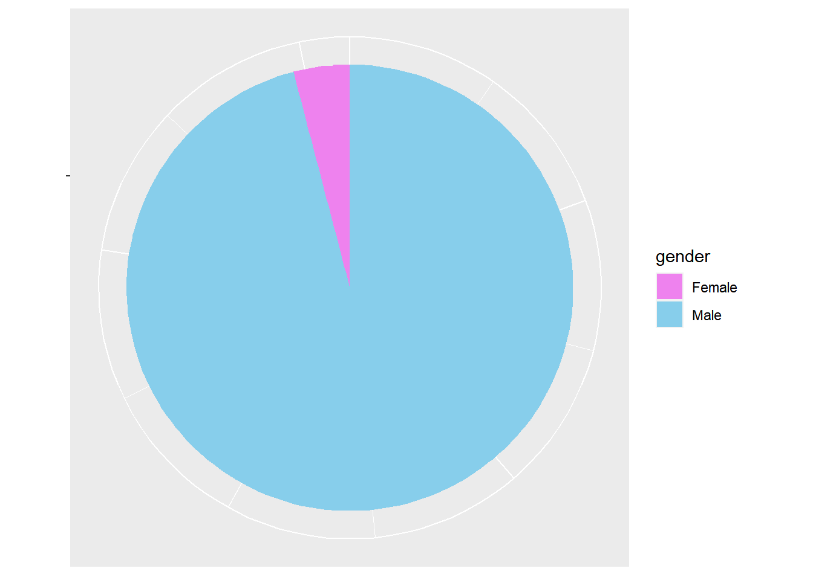
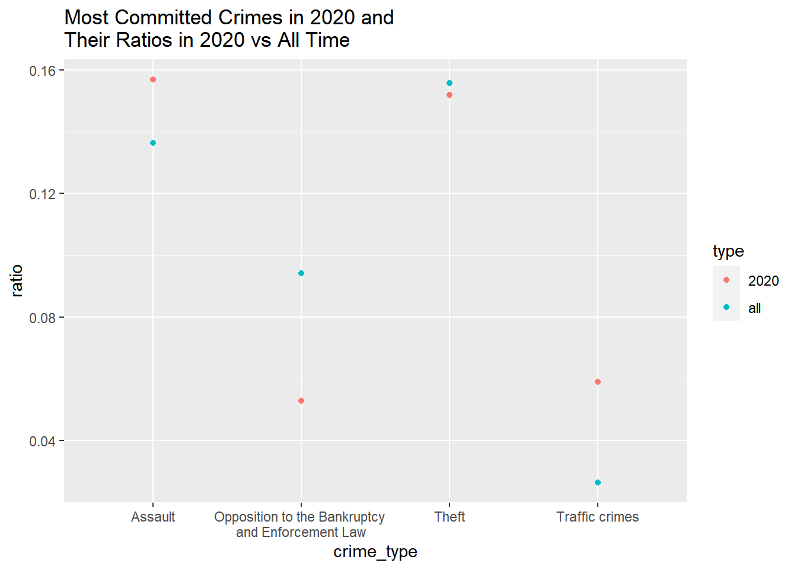

The project focuses on a comprehensive analysis of crime dynamics in Turkey from 2011 to 2020. Utilizing the dataset “suc turu ve egitim durumuna gore ceza infaz kurumuna giren hukumluler.xls” from TÜİK, the analysis explores the relationships between crime rates, gender, and education levels of offenders. The primary goal is to gain insights into the demographic characteristics of criminals and contribute to the development of effective crime control policies.
The primary dataset is obtained from “suc turu ve egitim durumuna gore ceza infaz kurumuna giren hukumluler.xls” from TÜİK, which contains information on people who have been sent to prison. In addition, index data from 2011 to 2020 are used to categorise and analyse crime trends. The dataset is processed using R with packages such as readxl, tidyr and dplyr.
An important aspect of this analysis is to consider the gender and educational level of the criminals in order to identify patterns and correlations between these demographic characteristics and crime rates. The R code provided illustrates the detailed steps taken to process the data, including tasks such as cleaning, structuring, handling NAs and preparing the data for visualisation.
The analysis produces some interesting results, particularly when looking at crime trends over the period 2011-2020. The plotted data reveals different patterns of crime rates in different categories, with some showing fluctuations and others showing rapid changes, possibly influenced by legal changes or social dynamics. Gender analysis adds depth to the findings, revealing which crimes are more common among certain genders and how these patterns evolve over the years. The use of logarithmic scaling on the y-axis strengthens the visualisation, allowing for the different magnitudes of crime rates and facilitating a more nuanced understanding of the data.
The main outcome of this project shows some generalisations about crime. It can be seen that most of the crimes are committed by men (96%), the most common crime is theft (15.7%) and most of the criminals have only secondary school education (29.9%).
The columns of data frames in this environment consists of “Years” (Year the crime was committed), “Number” (Number of times a criminal of given characteristics was prosecuted), “Gender” (Gender of the criminals), “Education Level” (Abbreviation of education levels), “Full Name” (Full names of said levels), “Type of Crimes” (Type of the crime committed), “Gender Total” (Male and female total in associated conditions).
The data is divided into two data frames with the difference of one containing education info and one not containing it because the plan at first was to just analyze the data based on gender and not education levels.
Exploratory Data Analysis (EDA) is provided below by Turkish Penal Institution Statistics for the year 2020.
Overall Trend
The total number of individuals in penal institutions decreased by 8.5% compared to the same date in 2019, reaching 266,831 on December 31, 2020.
Code
comp_2019_2020 <-filter(numbers, years ==c(2020,2019) & type_of_crimes ==c("Total")) |>ggplot(aes(years, gen_total)) +geom_col() +scale_x_continuous(breaks=c(2019,2020)) +ylab("total number of crimes")comp_2019_2020

Gender Distribution
96.0% of the penal institution population consisted of males, while 4.0% were females.
Code
total_male_female <-filter(education_cat, years ==2020& education_level =="t") |>ggplot(aes(x ="", y = number, fill = gender)) +geom_bar(stat ="identity", width =1) +coord_polar("y", start=0) +theme(axis.line =element_blank(), axis.text =element_blank(),axis.title.y =element_blank(),axis.line.y =element_blank(),axis.title.x =element_blank())+scale_fill_manual(values =c("violet", "skyblue"))total_male_female

Population Composition
Convicted individuals made up 84.3% of the population, while individuals in pretrial detention constituted 15.7%.
The number of individuals in penal institutions per 100,000 people was 319 on December 31, 2020.
Age Analysis
The number of individuals aged 12 and above in penal institutions was 390 per 100,000 people in 2020.
The number of individuals entering penal institutions as children (aged 12-17) decreased by 23.6% to 1,283, and those committing crimes as children decreased by 21.4% to 10,234 compared to the previous year.
Entrance and Exit Statistics
In 2020, 258,401 individuals entered penal institutions, and 361,870 individuals left.
95.9% of those entering and 96.4% of those leaving were males.
Crime Distribution
The most common crimes leading to detention were assault (15.7%), theft (15.2%), traffic offenses (5.9%), and violations of the Execution and Bankruptcy Law (5.3%).
As you can see from the plot below, when we compare overall ratio of these crimes to their values in 2020, traffic crimes are way higher in 2020. This is interesting when we consider that for most of the year, people were quarantined and most people were working from home or working flexibly.
Code
all_total <-filter(numbers, type_of_crimes =="Total")$gen_total |>sum()/2total_assault <-filter(numbers, type_of_crimes =="Assault")$gen_total |>sum()/2total_theft <-filter(numbers, type_of_crimes =="Theft")$gen_total |>sum()/2total_traffic <-filter(numbers, type_of_crimes =="Traffic crimes")$gen_total |>sum()/2total_law <-filter(numbers, type_of_crimes =="Opposition to the Bankruptcy and Enforcement Law")$gen_total |>sum()/2rate_assault <- total_assault/all_totalrate_theft <- total_theft/all_totalrate_traffic <- total_traffic/all_totalrate_law <- total_law/all_totalall_vs_2020 <-data.frame(type =c(rep("all", times =4), rep("2020", times =4)), ratio =c(rate_assault,rate_theft,rate_traffic,rate_law, 0.157, 0.152, 0.059, 0.053), crime_type =c("Assault", "Theft","Traffic crimes","Opposition to the Bankruptcy \nand Enforcement Law")) |>ggplot(aes(x = crime_type, y = ratio)) +geom_point(aes(color = type))+ggtitle("Most Committed Crimes in 2020 and\nTheir Ratios in 2020 vs All Time")all_vs_2020

Educational Background
Among those entering for assault, 29.9% had completed middle school, 26.0% high school, and 21.4% primary education.
Criminals with a higher education background were more likely to commit assault (9.2%), while those with no formal education were more likely to commit theft (30.2%).
There is an increasing trend between 2011 and 2013. Remains approximately stable in the years between 2013-2020. In general, an increase can be observed.
Bad Treatment
A slight increase is observed between 2011-2013. Between 2013-2018, a decrease and then an increase was observed and reached the same level. Afterwards, it continued with a slight increase.
Bribery
A rapid increase was observed between 2011-2013. There is a decrease in the number of crimes between 2013-2015. Until 2020, it first increased and then decreased, reaching the same crime level.
Contrary to Measures for Family Protection
Approximately the same level of offenses between 2011 and 2020.
Crimes Related with Firearms and Knives
Between 2013 and 2020, it is observed that the number of crimes first decreased and then increased, reaching the same level of crime.
Damage to Property
There was a general decrease in the number of crimes between 2013-2020.
Defamation
There is an increasing trend between 2011-2013. In the following years, an approximately constant number of offenses is observed. In general, an increase in the number of offenses is observed.
Embezzlement
There is an increase in the number of crimes in 2011-2013 and a slight decrease in 2013-2016. In the following years, it can be seen that the number of offenses has remained approximately constant. In general, there is an increase in the number of crimes.
Forestry
Between 2011 and 2015, there was an increase in the number of crimes at the same rate, and then it reached the same level with a decrease. In the following years, a general increase is observed.
Forgery
There is a slight increase in the number of offenses between 2011-2020.
Homicide
An increase is observed between 2011-2014. A decrease is observed in 2019-2020. In general, there is an increase in the crime rate.
Kidnapping
There is an increase between 2011-2013. In the following years, we can talk about approximately the same number of crimes and an increase is observed in general.
Opposition to the Bankruptcy and Enforsment Law
Between 2011-2019, there is a general decrease in the number of offenses.
Opposition to Cheque Law
A rapidly decreasing number of crimes was observed between 2011 and 2012.
Opposition to the Military Criminal Law
Stable in 2011-2012 and a significant decrease in 2012-2013. After 2013, an increasing trend is observed.
Other Crimes
In general, there is a slight increasing trend.
Prevention of Performance
There is a decreasing trend between 2013-2016. A slightly increasing trend is observed in the following years.
Use and Purchase of Drugs
Between 2011 and 2020, there appears to be a low rate of increase.
Factors such as economic difficulties or unemployment may be the main reason for this increase. Increased social pressures, increased stress levels and life difficulties, lighter sentences may increase drug use.
Traffic Crimes
The increase in general traffic density with urbanisation and population growth, inadequate urban planning and infrastructure deficiencies are among the reasons for the increase in traffic crimes.
Threat
Changes in social communication, social media and other communication technologies, police intervention, security policies and criminal sanctions can affect threat offences.
Theft
While theft crime increased between 2011-2014, it remained almost at the same level between 2014-2020. The increase in theft crimes between 2011-2014 may have led to an increase in security measures during this period. Increased police and improvements in security systems may have reduced theft crimes.
Swindling
Between 2011 and 2020, an increase rate is observed.
The reason for this increase may be the widespread use of the internet and cyber swindling crimes.
Smuggling
According to the years, smuggling offences appear to be decreasing and increasing in some years.Economic gains from smuggling activities may affect crime rates.
Sexual Crimes
While theft crime increased between 2011-2014, it remained almost at the same level between 2014-2020.
The increase in awareness of sexual crimes in the society and the increase in the rate of reporting crimes by victims may increase as crimes are recorded more.
Robbery
While robbery crimes increased between 2011-2014, they remained almost at the same level between 2014-2020.The economic situation is one of the most important reasons affecting robbery crimes. Factors such as economic insufficiency, unemployment or income inequality can lead to an increase in robbery offences.
Production and Commerce of Drugs
Drug production and trafficking increased briefly from 2011 onwards and then remained almost at the same level.
Approaches focussing on rehabilitation rather than punishment and changes in criminal justice policies can affect drug trafficking.
Trend Analysis
In general, when we analyze the total number of crime types over the years, we observe an increasing trend. We can say that the main reason for this is the increase in economic difficulties with the growing population and the gradual change in the social structure. In addition, the fact that data collection and record-keeping are being carried out more with advanced technology than in 2011 allows for more statistical data to be kept on these crime rates. This shows that there is a reason to consider for the increase in the number of crimes.
Reasons for the Increasing Trend
Economic Challenges
Economic recession, rising unemployment rates or economic uncertainty can lead to increased crime rates. When people are struggling with financial difficulties, the risk of crime often increases.
Social Changes
Urbanization, migration movements or changes in the social structure can affect crime rates. Especially in urbanized areas, crime rates often increase.
Legal and Penal System
Legal reforms, changes in criminal laws or changes in penal enforcement policies can affect crime rates. Harsher penalties or alternative forms of punishment may increase or decrease crime rates.
Social Support and Rehabilitation Services
Lack of effective social support, rehabilitation and reintegration services can lead to increased crime rates. It is important to reintegrate and support offenders into society.
Media and Cultural Influences
How the media portrays crimes, perceptions of offenders and social norms can influence crime rates. Media exaggeration of crimes or dissemination of misleading information can lead to an increase in crime rates.
Reasons for the Decreasing Trend
Effective Police and Security Measures
More effective police work, security measures and crime prevention programs can reduce crime rates.
Education and Awareness
Awareness and education programs about the negative effects of crime in society can contribute to lower crime rates.
Social Assistance and Support Programs
Economic and social support programs can reduce crime among disadvantaged groups and promote social cohesion.
Legal Reforms
Legal reforms and changes in criminal laws can support offenders’ reintegration and return to society.
Social Norms and Values
The attitude of social norms and values towards crime can influence crime rates. Positive social norms and values can contribute to lower crime rates.
Social Changes
Urbanization, migration movements or changes in the social structure can affect crime rates. Especially in urbanized areas, crime rates often increase.